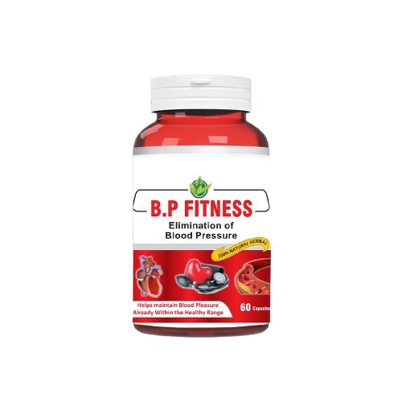

بلڈ پریشر اور دل کا
جدید طبی حل
B.p Fitness قدرتی اجزاء کا ایسا متوازن امتزاج ہے جو دل، رگوں اور اعساب کو بیک وقت سپورٹ دیتا ہے۔ باقاعدہ استعمال کے ساتھ یہ بلڈ پریشر کو نارمل رکھنے میں مددگار ثابت ہوتا ہے۔
ابھی آرڈر کریںطبی معیار
مصنوعات تمام طبی ٹیسٹ پاس کر چکی ہے اور بین الاقوامی معیار کے مطابق تیار کی گئی ہے۔
خالص حکمت
خالص جڑی بوٹیوں سے تیار کردہ جو جسم کے قدرتی دفاعی نظام کو مضبوط بناتا ہے۔
ہزاروں معالجین کی پسند
ہزاروں مریضوں نے اس کے استعمال سے اپنی زندگی میں واضح بہتری محسوس کی ہے۔
بلڈ پریشر کنٹرول کے 4 بنیادی فائدے
Blood pressure monitoring
نارمل رینج میں لانا
بلڈ پریشر کو بتدریج نارمل رینج کے قریب لانے میں مدد کرتا ہے
خون کی نالیوں کی لچک
خون کی نالیوں کی لچک اور خون کے بہاؤ میں بہتری لاتا ہے، دل پر بوجھ کم کرتا ہے
دل کی دھڑکن متوازن
دل پر بوجھ کم کر کے دھڑکن کو متوازن کرنے میں مدد دیتا ہے
ذہنی اور جسمانی راحت
سر درد، چکر آنا اور بھاری پن میں واضح کمی لاتا ہے، تناؤ اور بے چینی کم کر کے ذہنی سکون میں اضافہ کرتا ہے
بلڈ پریشر کو نظر انداز کرنے کی پیچیدگیاں
اگر بلڈ پریشر کو بروقت کنٹرول نہ کیا جائے تو یہ آہستہ آہستہ پورے جسم پر اثر انداز ہوتا ہے۔ B.p Fitness صحت مند لائف اسٹائل کے ساتھ بلڈ پریشر کو نارمل رکھنے میں مدد دیتا ہے۔
B.p Fitness – دل اور رگوں کے لیے 5 اہم اقدامات
خون کی نالیوں کو نرم اور مضبوط بنانے میں مدد کرتا ہے، خون کا بہاؤ بہتر بناتا ہے
دل تک آکسیجن اور خون کی بہتر فراہمی میں مدد کرتا ہے، دل کی کارکردگی بہتر بناتا ہے
سر درد، بھاری پن اور چکر میں واضح کمی لاتا ہے، روزمرہ زندگی کو آسان بناتا ہے
تناؤ اور بے چینی کم کر کے ذہنی سکون میں اضافہ کرتا ہے
روزمرہ کے کاموں میں توانائی اور فِٹنس کو بہتر بناتا ہے، زندگی کو متحرک رکھتا ہے
ماہر کی رائے

B.p Fitness کے استعمال کے بعد، میرے مریضوں کے بلڈ پریشر اور دل کی صحت میں نمایاں بہتری دیکھنے میں آئی ہے۔ یہ جدید ہربل سپورٹ نہ صرف بلڈ پریشر کو متوازن رکھنے میں مدد دیتی ہے بلکہ دل پر بوجھ کم کر کے مجموعی صحت کو بہتر بناتی ہے۔ میں اسے ایک مؤثر اور قابلِ اعتماد حل کے طور پر تجویز کرتا ہوں۔
Prof. Abul Basit
Director, Cardiovascular & Blood Pressure Care
ڈسکاؤنٹ وہیل گھمائیں!
طبی رہنمائی کے ساتھ آرڈر کریں
100% محفوظ طبی حل
بہتر زندگی کا فیصلہ
ہزاروں مطمئن گاہکوں کی فہرست میں شامل ہوں جنہوں نے B.p Fitness کو اپنا کر اپنی زندگی کو دوبارہ فعال اور خوشگوار بنایا۔
ISO
سرٹیفائیڈ
24/7
سپورٹ سروس